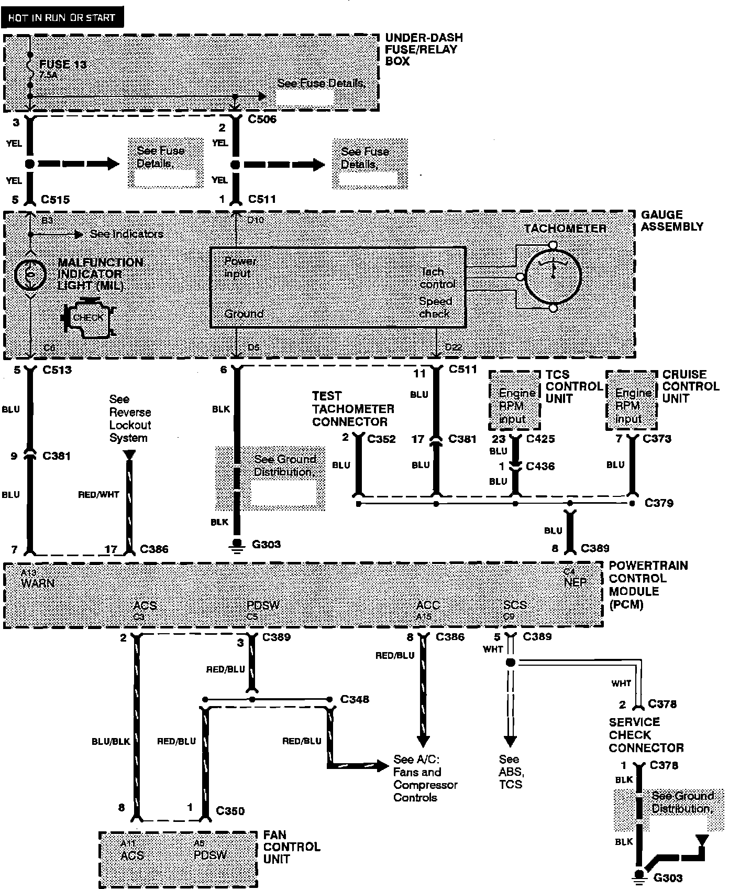

Operation CHARM
: Car repair manuals for everyone.
Home
>>
Acura
>>
1993
>>
Legend Coupe V6-3206cc 3.2L SOHC FI
>>
Repair and Diagnosis
>>
Maintenance
>>
Service Reminder Indicators
>>
Malfunction Indicator Lamp
>>
Diagrams
>>
Electrical Diagrams
Electrical Diagrams
Malfunction Indicator Light:
